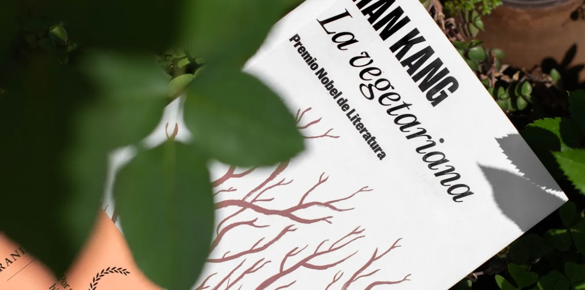
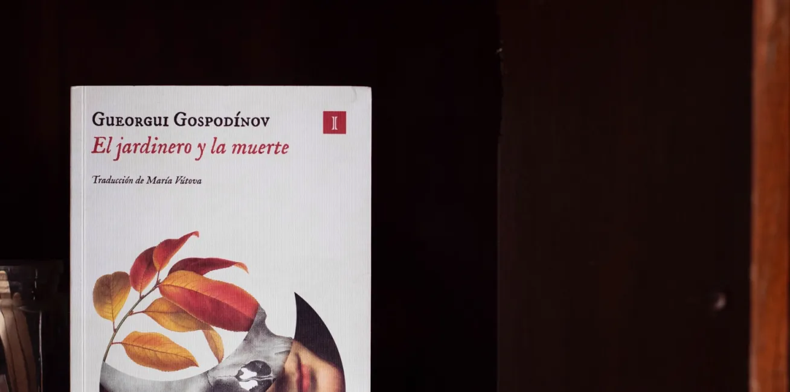
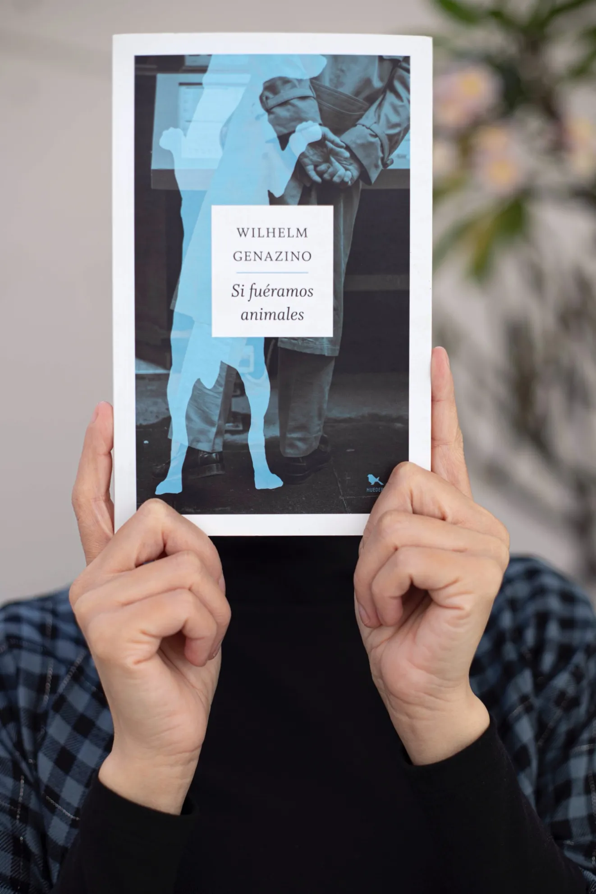
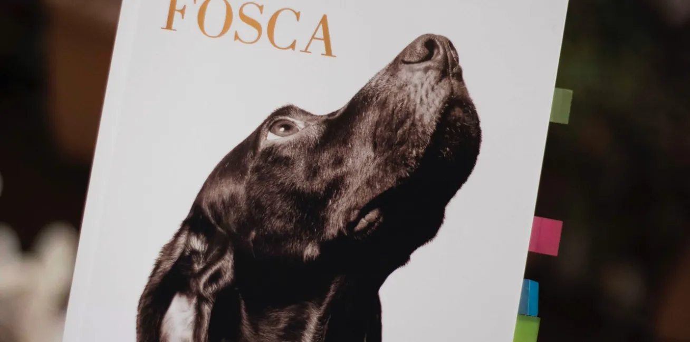
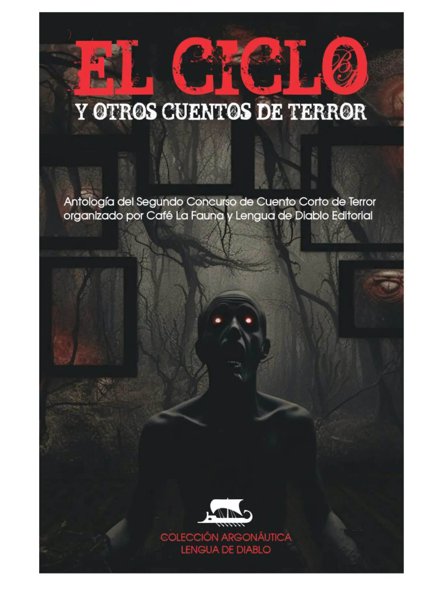
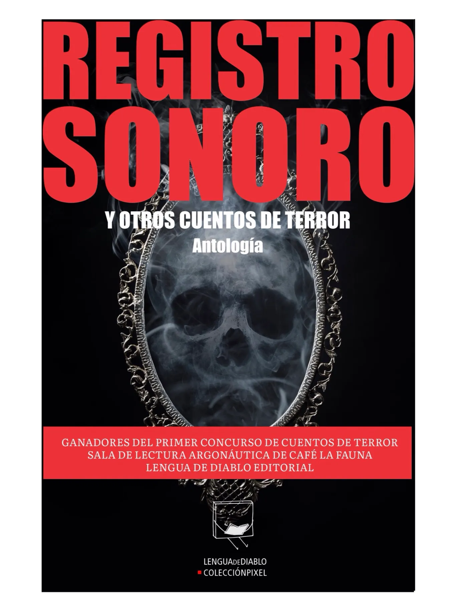

Archivo Fauno

El Exorcista
"El exorcista", una historia de terror que ha ganado adeptos por la película como por la novela.
Ver Más
La Semilla del Diablo
Un clásico de los sesentas que décadas después, tiene mucho miedo qué ofrecer.
Ver Más
La Vegetariana
Una de las novelas más conocidas de la ganadora del Nobel de Literatura en 2024, Han Kang.
Ver Más
La Profecía
En este texto, Salvador Flores nos comparte una novela que marcó un parteaguas en la literatura de terror.
Ver Más
Sinsonte
Walter Tevis ofrece en Sinsonte un mundo distópico ambientado en Estados Unidos en el siglo XXV.
Ver Más
El Jardinero y la Muerte
En esta obra literaria, Gospodínov escribe la muerte como ese tiempo suspendido en el que el padre aún está, pero ya comienza a irse.
Ver Más
La Campana de Cristal
"La campana de cristal" es la única novela de la poeta Sylvia Plath. Sobre esta obra comenta la lectora Luisa Briones.
Ver Más
Si Fuéramos Animales
Hay libros que ponen en palabras todo aquello que llevamos dentro. Si fuéramos animales, de Wilhelm Genazino, es uno de ellos.
Ver Más
Kitchen
Es la primera novela de Banana Yoshimoto. Narra la historia de Mikage, una joven que queda completamente sola en una casa inmensa, hasta que Yuichi toca a su puerta y le propone ir a vivir con él y con su madre, Eriko, quien tras la muerte de la madre biológica de Yuichi, transiciona en una mujer hermosa y profundamente acogedora.
Ver Más
Fosca
Si disfrutas de personajes complejos, con voces interiores poderosas; de tramas donde lo que ocurre dentro importa tanto como lo que ocurre afuera; y si alguna vez te has sentido excluida social y/o corporalmente, esta novela puede resonarte profundamente.
Ver Más
El Fin del Mundo y un Despiadado País de las Maravillas
Hay historias que funcionan como espejos dobles, donde una se mira desde afuera y al mismo tiempo desde adentro. Esta novela de Murakami, es una de ellas.
Ver Más
El Gran Dios Bestia y Otros Cuentos de Terror (La Elección del Lector)
Sandra Arias es la lectora que en esta cuarta edición del concurso de cuento corto de terror participa en "La elección del lector", que consiste en elegir un cuento que, adicional al ganador "El gran dios bestia", le resulte interesante. Su elección fue el cuento "Sueño colectivo" de Emmanuel Lagunas.
Ver Más
El Torito y Otros Cuentos de Terror (La Elección del Lector)
En esta edición el cuento ganador fue "El Torito", de Adriana Letechipía, adicional a ello, tomando en cuenta a los lectores, creamos esta sección en la que un lector asiduo elige un cuento distinto al ganador como "la elección del lector", que este concurso corresponde al cuento "Los de afuera" de Edith Esquivel Eguiguren.
Ver Más
El Ciclo y Otros Cuentos de Terror (La Elección del Lector)
En esta edición el cuento ganador fue "El ciclo", de Ben durán, adicional a ello, tomando en cuenta a los lectores, creamos esta sección en la que lectores asiduos de Argonáutica, la sala de lectura de Café La Fauna, eligen un cuento distinto al ganador como "la elección del lector". En la segunda edición del concurso corresponde al cuento "En el armario" de Jazmín Zarco Uribe.
Ver Más
Registro Sonoro y Otros Cuentos de Terror (La Elección del Lector)
Tomando en cuenta que los lectores pueden tener otra opinión, creamos esta sección en la que lectores asiduos de Argonáutica, la sala de lectura de Café La Fauna, elige un cuento distinto al ganador como “la elección del lector”. Este primer concurso corresponde al cuento “Bullicio” de Lorenza González Ortega.
Ver Más